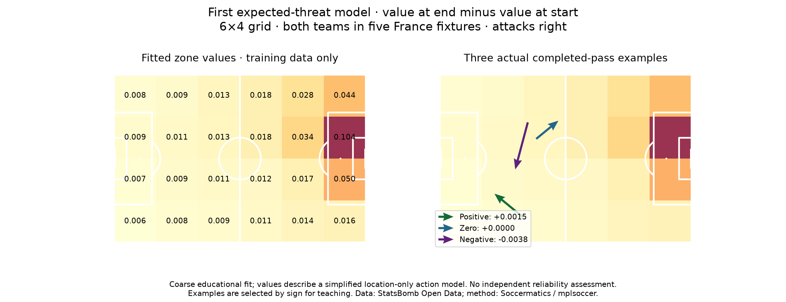

Football analyst training · Phase 3 · Lesson 44
Value the move before the shot.
xG estimates a shot's scoring chance. Expected threat, or xT, assigns a value to a ball location under a simplified model of what can happen next.
The main calculation
Added xT = end-zone value − start-zone value
Moving from a zone valued at 0.01 to one valued at 0.04 adds 0.03 xT. Those two numbers are an illustration; our actual examples appear in the figure.

Completed assignment
We fitted a coarse grid using 6,770 selected actions from both teams in five matches. The action counts and successful movements teach the model how zone values connect to later goal outcomes.
An actual Cascarino pass moves from 0.007757 to 0.009224, adding about 0.001467 xT. We also saved zero and negative examples.
Interpret the sign carefully
Positive means a higher-valued destination under this model. Negative means a lower-valued destination; it does not automatically mean a bad decision. Zero can simply mean both positions share one coarse cell.
This model uses only location. It omits pressure, defenders and sequence context. We have checked its calculation, but have not independently tested its football reliability.
Run 44_first_expected_threat.py in Spyder. cell() assigns a zone; fit_grid() propagates destination values. The worked assignment is complete with assistance. Ask for a slower explanation of this new model if needed.